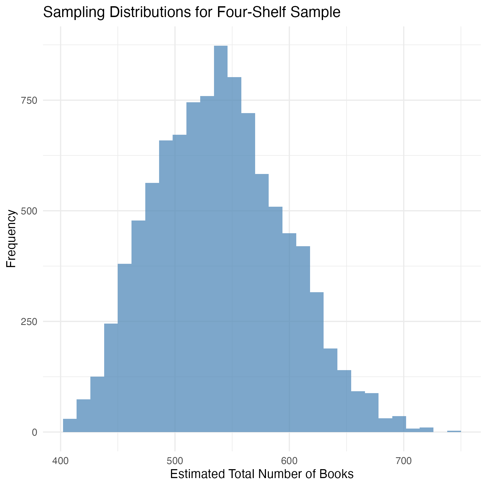
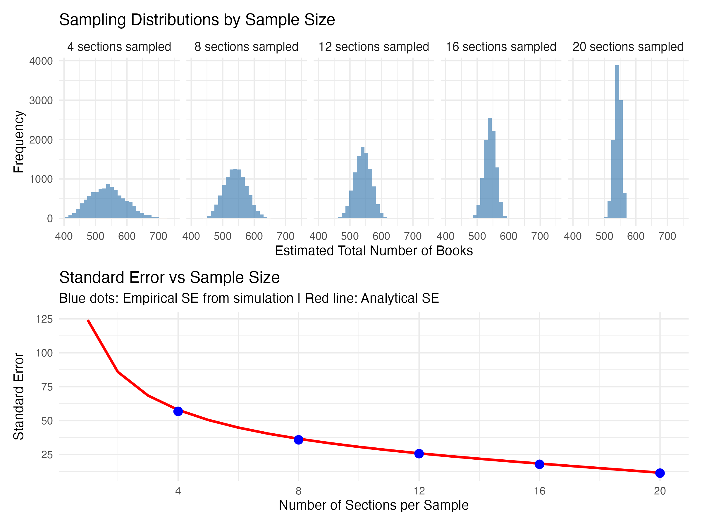

How many books do you see in this image? And how could you estimate the total number of books without having to count all of them? This exercise was introduced by the multiplicity lab to help train teachers to help students develop an understanding of statistical concepts. My wife showed this to me. She's doing her masters in primary school teaching and worked through this exercise in her tutorial this week. When she told me about it, I couldn't help but think about how much this exercise can teach us about sampling distributions.
What's a Sampling Distribution?
First, let's identify the thing we're trying to estimate. Here, this quantity is simply the total number of books. In statistical terms, this is our test statistic. To estimate this test statistic, we need to come up with some model (a fancy word for saying 'way') to calculate it. Here, that's pretty simple too. We just pick a certain number of sections in the shelf, count the number of books in each section, take the average across sections, and then multiply that average by 24 (the total number of sections in the shelf).
As an example, let's take the four sections in the top row. As it turns out, these shelves have 21, 17, 17, and 22 books respectively. These four shelves are called our sample. Across these four sections, the average number of books is 18.5. If we multiply that average by 24, we get 444 books total. Thus, 444 is an estimate of our test statistic. But this number is just one estimate of many possible estimates we might have obtained. Let's say we use a different sample, for example, the second row of four instead of the first (where the sections have 23, 19, 29, and 30 books). Based on this sample, our estimate of the total number of books would be 606.
Let's assume we repeat this sampling procedure many times, each time randomly selecting four sections, and using those randomly selected sections to estimate the total number of books. The graph below shows the distribution of estimates that I obtained when I simulated this procedure 10,000 times. This is called the sampling distribution of our test statistic. It's the distribution of estimated values we'd expect if we were to keep repeating our sampling procedure. The average estimate is 542.27 books. But as you can see, this distribution varies quite a bit, with some estimates being as low as 400 books and others being more than 700.

The fact that the same procedure can yield different estimates depending on which units are sampled is the foundation for a large branch of statistical theory. In this example, we know exactly what our sampling distribution looks like because we can count the number of books in every section. However, in practice we don't. If you're trying to estimate how many people will vote for a particular candidate, you can't ask every single voter. If you're trying to estimate average customer satisfaction across thousands of locations, you can't survey every single customer.
So, in practice, how do we know whether our estimate is likely to be close to the truth or way off? To do this, we need to understand how much our estimates will typically vary. This is where the concept of standard error becomes important. Standard error is a measure of how much the estimates produced by our sampling procedure differ from one another. Formally, it's the standard deviation of the sampling distribution. In our example, the standard error of our estimate is 56.80. The larger the standard error, the more the estimate can vary, and the less likely it is that our estimate will accurately reflect the true total number of books.
How can we improve the estimate of the test statistic?
If the goal is to generate a test statistic that is as accurate an estimate as possible of the true value, it follows that we want to try to reduce the standard error. The easiest way to do this is to collect more data. One of the first formulas taught in every first year statistics course describes how the standard error increases with the square root of the sample size. But I always find it interesting to see this law in action. So I used the same method to generate sampling distributions for sample sizes of 8, 12, 16, and 20 sections.
The top row in the figure below shows how the sampling distribution changes when you increase the number of sections in each sample. As you increase the sample size from 4, to 8, and eventually to 20 shelves, the distributions get more concentrated. Your estimate gets more precise. The bottom panel shows the standard deviation of each sampling distribution (blue dots) mapped against the standard error you get from that formula I mentioned before (red line). When you transition from 4 to 8 shelves, there's a big decrease in the standard error. But further increases in the number of shelves produce smaller and smaller decreases. This is the square root law at play1.

So How Many Books Are There?
At this point we've expended far more effort than would be required to just count all the books in the first place. But this was way more fun! And hopefully it was educational. I love using simulations like these to explore statistical concepts. It can really help you to see the intuition behind the formulae. I've put the R code I used to create these simulations at the bottom of this post. Feel free to play around with it.
So how many books are there actually in total? Well, I counted 542. But that's by no means a perfect estimate.
1 Okay, this is slightly different from the classic standard error formula, because you have to apply what's called a finite sample correction factor to account for the fact that there is a limited number of units (sections) to sample. But the intuition doesn't change.
R Code Used for These Simulations
# Clear workspace
rm(list=ls())
# Load packages
library(tidyverse)
library(patchwork)
# Set seed
set.seed(123)
# Number of books in each section
n_books = c(21,17,14,22,23,19,29,30,33,20,33,28,29,20,21,25,20,21,16,20,20,21,18,22)
# Estimate total books based on first row of four
mean(n_books[1:4])*24
# Estimate total books based on second row of four
mean(n_books[5:8])*24
# Run simulation
n_reps = 10000 #number of times sampling procedure is repeated
n_per_sample = c(4,8,12,16,20) #sample sizes
simulation = expand_grid(n_per_sample = n_per_sample,
rep = 1:n_reps,
estimated_total = NA)
for(i in 1:nrow(simulation)){
sections_sampled = sample(1:24,size=simulation$n_per_sample[i])
simulation$estimated_total[i] = mean(n_books[sections_sampled]*24)
}
# Compute average estimate for 4 shelf sample
mean(simulation$estimated_total[simulation$n_per_sample==4])
# Compute sd of estimate for 4 shelf sample
sd(simulation$estimated_total[simulation$n_per_sample==4])
# Visualise sampling distribution for 4 shelf sample
p1 <- simulation %>%
filter(n_per_sample == 4) %>%
ggplot(aes(x = estimated_total)) +
geom_histogram(bins = 30, fill = "steelblue", alpha = 0.7) +
labs(x = "Estimated Total Number of Books",
y = "Frequency",
title = "Sampling Distributions by Sample Size") +
theme_minimal() +
theme(strip.text = element_text(size = 10))
# Visualise sampling distribution for all samples
p2 <- simulation %>%
mutate(n_per_sample_factor = factor(n_per_sample,
levels = c(4, 8, 12, 16, 20),
labels = paste0(c(4, 8, 12, 16, 20), " sections sampled"))) %>%
ggplot(aes(x = estimated_total)) +
geom_histogram(bins = 30, fill = "steelblue", alpha = 0.7) +
facet_wrap(~n_per_sample_factor, nrow = 1) +
labs(x = "Estimated Total Number of Books",
y = "Frequency",
title = "Sampling Distributions by Sample Size") +
theme_minimal() +
theme(strip.text = element_text(size = 10))
# Visualise Standard error vs sample size
# Create data for smooth analytic line
analytical_line <- tibble(
n_per_sample = 1:20,
fpc = sqrt((24 - n_per_sample) / (24 - 1)),
std_error_ana = 24*sd(n_books)/sqrt(n_per_sample)*fpc
)
# Create plot
p3 <- simulation %>%
group_by(n_per_sample) %>%
summarise(std_error_emp = sd(estimated_total)) %>%
ggplot(aes(x = n_per_sample)) +
geom_line(data = analytical_line, aes(y = std_error_ana),
color = "red", linewidth = 1) +
geom_point(aes(y = std_error_emp), size = 3, color = "blue") +
labs(x = "Number of Sections per Sample",
y = "Standard Error",
title = "Standard Error vs Sample Size",
subtitle = "Blue dots: Empirical SE from simulation | Red line: Analytical SE") +
theme_minimal() +
scale_x_continuous(breaks = c(4, 8, 12, 16, 20), limits = c(1, 20))
# Combine plots
p2 / p3 + plot_layout(heights = c(1, 1))